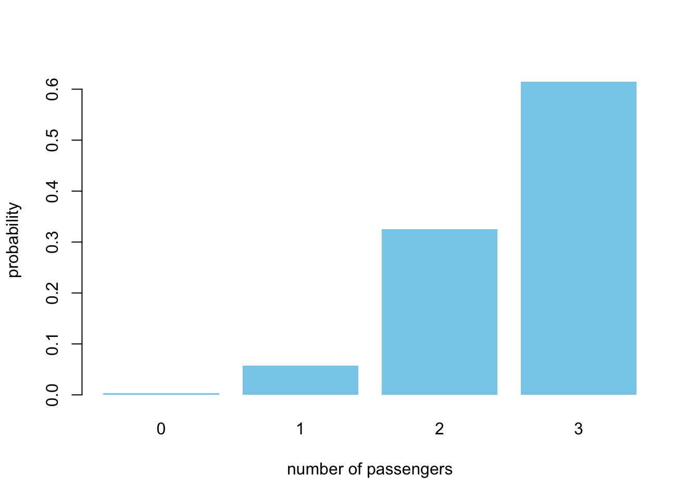
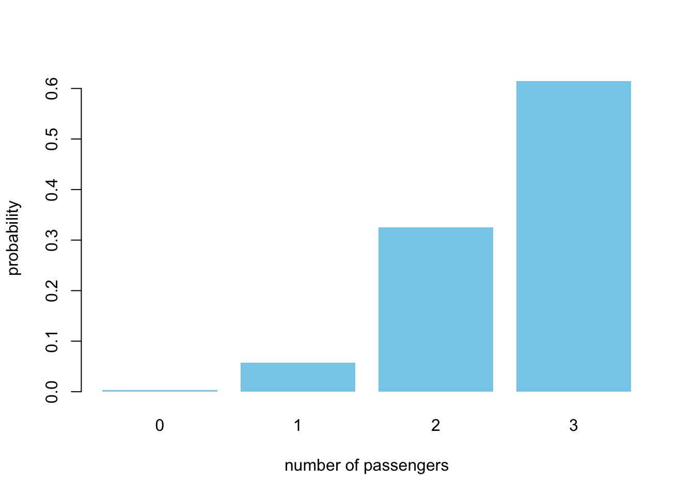
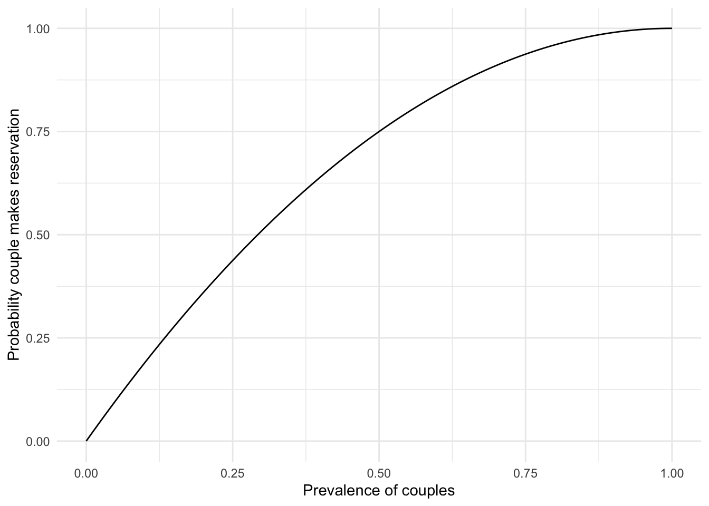
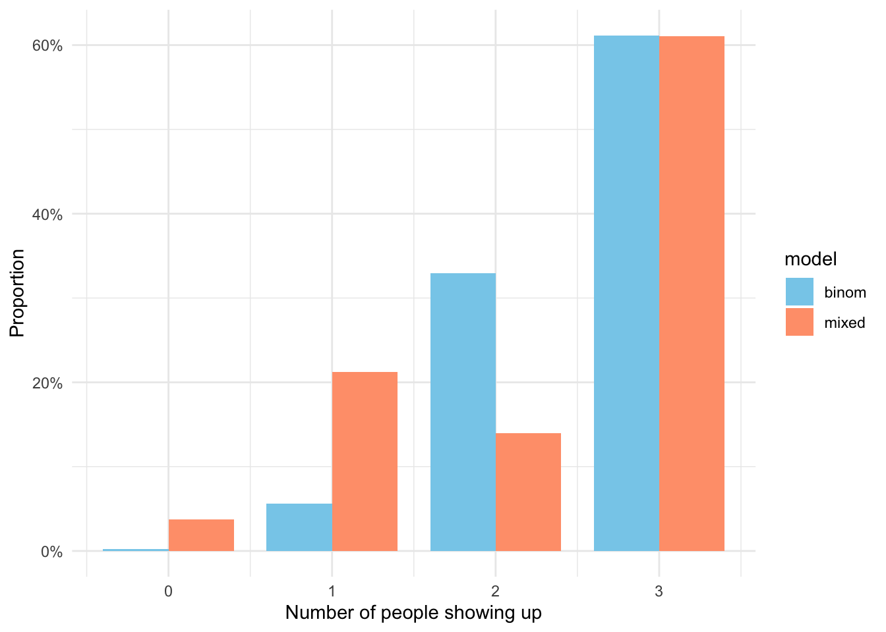
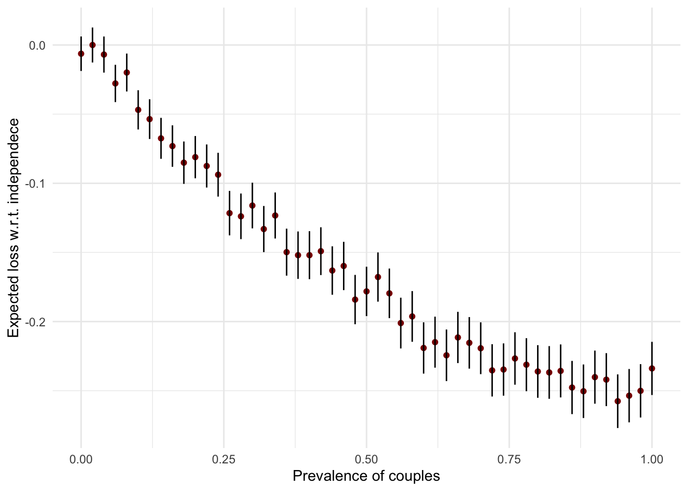

setNames(dbinom(0:3, size = 3, prob = 0.85), 0:3) |>
barplot(
col = "skyblue", border = NA,
xlab = "number of passengers", ylab = "probability"
)
Bernoulli, Binomial, Probability trees
Mihai Bizovi, VP of Decision Science
In the previous lab we used elementary notions of combinatorics to solve and simulate the birthday problem. I also emphasized the limitations of the naive definition of probability and the need to understand more rigorously the probability triple \((\Omega, \mathcal{F}, \mathbb{P})\). We then saw that working with sets is awkward, hence the need for the idea of random variable.
You encountered all of these notions in your probability and mathematical statistics classes, but it’s valuable to make sure you understand their practical relevance and correct interpretation
Today, we will learn how to represent uncertainty for a single variable in a story of people showing up to their safari trip reservation. If you need a refresher on descriptive statistics, I highly recommend you read Chapter 3 of the “Effect Book” and pay close attention to the hypothesis testing section.
We’ll start with the simplest version of the safari story, which is inspired by A. Fleischhacker’s Chapter 2 of “Persuasive Python”. Imagine you have a small business of organizing safari trips, where customers make reservations on the website, but don’t have to pay a deposit.1
1 Of course, it’s a bad idea in practice since we all know people don’t always show up to what they signed up for
You have a pick-up truck with 3 available spots. Each customer has a probability of \(p=0.85\) of showing up and they make this decision independently. What is the probability that we’ll go for a trip with 0,1,2, or 3 people? For that, you’ll have to find the appropriate probability mass function (PMF) and the building block is the good old coin flip.
\[ \mathbb{P}(X=k) = {n \choose k} \cdot p^k \cdot (1-p)^{n-k} \]
In order to never forget this distribution, first, think about the story behind combinations – in how many ways can we split 10 people into teams of 4 and 6? This will be important when we want to compute in how many ways we could achieve k successes out of n trials, where each attempt is independent. 2
2 Think of basketball shots, number of patients experiencing side-effects from a medication, number of fraudulent transactions, number of defects in a batch of manufactured products, etc
3 This way, you will never have to rote-memorize the formulas, but can derive them logically when needed
\[ {n \choose k} = \frac{n!}{k! \cdot (n-k)!} = \frac{n(n-1)(n-2) ...(n-k+1)}{k!} \] Remember the falling factorial from last time and ordered sampling without replacement? In the case of combinations, we don’t care about the order in which we sample the people in the team. Therefore, by dividing by \(k!\), which is the number of ways we can arrange the k people in one of the teams, we correct for that over-counding. Last, but not least, it doesn’t matter which way we select the teams: \(k\) or \((n-k)\) first.3
| ordered | unordered | |
|---|---|---|
| with replacement | \(n^k\) | \({n + k - 1 \choose k}\) |
| without replacement | \(n(n-1)...(n-k+1)\) | \({n \choose k}\) |
We can summarize what we learned about sampling in this neat table. The unordered sampling with replacement will be relevant only in the case of bootstrapping and its proof is a bit more involved.4
4 You can check out the proof and the urn model that was used by Bose-Einstein to describe their condensate, in this lecture by Santosh S. Venkatesh
Going back to our Bernoulli distribution, we use n choose k (combinations) to account for the number of ways in which, for example, 2 out of 3 people can show up. As a foreshadowing for the rest of the course, remember this key idea:
For each possible explanation of the sample (“hypothesis”, value of parameter \(\theta\)), “count” all the ways the (obeserved) sample could happen. Explanations with more ways to produce the sample are more plausible. – Richard McElreath
Notice the difference in R between dbinom() and rbinom(). The prior is the theoretical probability mass function (distribution) and the latter can be used to generate arrays of random numbers from the binomial. Now, you have all the necessary background in order to answer the initial question in a few lines of code.
setNames(dbinom(0:3, size = 3, prob = 0.85), 0:3) |>
barplot(
col = "skyblue", border = NA,
xlab = "number of passengers", ylab = "probability"
)
Notice how incredibly unlikely is it that no one shows up. And it’s clear why: \(1 - 0.85^3\)
After this warm-up exercise, I will subtly modify the safari story, which will complicate the matters a lot. We will no longer be able to extract insights via mathematical analysis alone, hence, we will need to simulate!
In reality, we might have friends and couples making reservations to the safari. For the sake of this problem, let’s assume that if one of them doesn’t show up, neither will the other. The proportion of people who make reservations for two is \(c = 0.6\), but we’ll have to compute the probability that we’ll have a couple in a given trip (\(p_c\)).5
5 We can’t use the proportion \((c)\) directly, because a reservation for two leaves only one spot available
\[ p_c = c + (1-c)c \] In order to see how we arrived at this formula, draw a probability tree and if still not sure, validate the results via a brute-force simulation which you can see below.
We can check that our analytical answer for \(p_c\) = 0.84 is close to the simulation. This little exercise has no other purpose than for you to practice control flow and conditionals in R.
# validate final proportion of couples and individuals
reservations <- replicate(n = 10000, {
first_reservation <- rbinom(1, 1, prevalence_couples)
first <- ifelse(first_reservation == 1, "CC", "I") # if-else expression
if (first == "CC") { second <- "I" }
else {
second_reservation <- rbinom(1, 1, prevalence_couples)
second <- ifelse(second_reservation == 1, "CC", "II")
}
paste0(first, second)
})
reservations |> grepl(pattern = "C") |> table() / 10000
FALSE TRUE
0.1531 0.8469 Once we know what is the probability of having two friends or a couple in a trip, we have all the necessary information to derive the PMF of the total number of people showing up. We’ll denote the random variable for the couple making a rezervation \(Z \sim Bern(p_c)\), which is a coin flip or Bernoulli random variable. The probability that both friends will show up is \(p^2\), a fact which you can verify again by drawing a probability tree or 2x2 table.
\[\begin{align} Z & \sim Bern(p_c) \\ Y & = Bin(n=3 - 2Z, p) + 2Z \cdot Bern(p^2) \end{align}\]
This is one way in which you can think about the total number of people showing up. The first term represents the individuals, which can be 1 when \(Z=1\) or 3 when \(Z=0\).6 The second term will be 0 if there is no couple and 2 otherwise, since \(Bern(p^2)\) can take values of \(\{0, 1\}\). This is an example of a mixture model, an extremely useful tool in statistical modeling, when we have heterogeneous sub-populations.
6 More precisely, the distribution of number of successes k out of 1 or 3 attempts
Alternatively, you can look at this problem as a mixture of two cases: when we have only individuals or a couple and an individual customer.
\[\begin{align} Y_{ind} & \sim Bin(3, p) \\ Y_{mix} & \sim Bern(p^2) + Bern(p) \\ Y & = Z \cdot Y_{mix} + (1-Z) \cdot Y_{ind} \end{align}\]
Now, good luck deriving analytically the distribution and expected value of Y. Even in this seemingly trivial problem we will have to simulate in order to understand what consequences does having reservations for two entail for our small business.
simulate_customers <- function(
prevalence_couples = 0.6,
prob_showup = 0.85,
nr_sim = 10000
) {
prob_couple <- prevalence_couples +
(1 - prevalence_couples) * prevalence_couples
replicate(n = nr_sim, {
has_couple <- rbinom(1, 1, prob_couple)
y_ind <- rbinom(1, 3 - 2*has_couple, prob_showup)
y_mix <- has_couple * 2 * rbinom(1, 1, prob_showup^2)
y_ind + y_mix
}) |> table() / nr_sim
}
simulate_customers()
0 1 2 3
0.0361 0.2101 0.1411 0.6127 Notice that this time we summarize the simulation by counting the number of times we observed 0..3 with the table() function.

As in the first lab, let’s do the same simulation in the tidyverse by using vectorized calculations of the formula we derived. We will then have to compare the results against a scenario in which customers are independent, as in the previous section.
nr_sim <- 10000
sim <- tibble(
has_couple = rbinom(nr_sim, 1, prob_couple),
nr_individ = 3 - 2*has_couple,
y_ind = purrr::map_int(nr_individ, \(x) rbinom(1, x, prob_showup)),
y = y_ind + has_couple * 2 * purrr::map_int(has_couple, \(x) rbinom(1, 1, prob_showup^2)),
model = "mixed"
) |>
select(y, model) |>
rbind(tibble(
y = rbinom(nr_sim, 3, prob_showup),
model = "binom"
)) |>
group_by(model) |>
count(y) |>
mutate(prob = n / sum(n))sim |>
ggplot(aes(x = y, y = prob, fill = model)) +
geom_col(position = "dodge", width = 0.8) +
labs(x = "Number of people showing up", y = "Proportion") +
# scale_fill_viridis_d(option = "E") +
scale_fill_manual(
values = c("skyblue", "lightsalmon"),
breaks = c("binom", "mixed")
) +
scale_y_continuous(labels = scales::percent_format()) +
theme_minimal()
These results make sense, as we’re much more likely to end up with zero or one passenger than in the case of independence, because of that \(p^2\) term. Now, a fair question to ask is how sensitive is the result to different proportions of couples in the population. It is clear that if it is very small, the results will be more similar to \(Bern(n, p)\) – but we would like to know exactly, in expectation, how fewer people will show up as \(c\) grows.7
7 This is perhaps the simplest example of sensitivity analysis, where we want to see how much our conclusion changes if we start from a different assumption.
\[
\mathcal{L}(p_c) = \mathbb{E}[Y_{ind} - Y(p_c)], \quad p_c \in [0, 1]
\] As you will see in the simulation, the curve is not entirely smooth or monotonic, which shouldn’t be the case in theory. The fluctuations are small enough to be irrelevant in practice, but it’s useful in such cases to represent somehow our uncertainty in the estimation of the mean. Since our function simulate_customers returns only the distribution and not the samples themselves, we will have to use the formulas for the theoretical variance of an arbitrary, discrete random variable. We will use that to draw error bars around the mean difference (loss).
\[ \mathcal{L}(p_c) \pm 2\sqrt{\frac{\sigma^2}{n}} \] This doesn’t make as much sense as the confidence intervals you encounter in statistical testing, but it gives us an idea how munch the mean could vary in our 10k simulations for each value of \(p_c\). We will investigate these question in much more detail and rigor in the following lectures and labs.
I use the conventional name of loss function, as in machine learning, but for now think of it just as a difference / delta.
set.seed(11131)
prob_grid <- seq(0, 1, 0.02)
sapply(
prob_grid,
FUN = \(x) simulate_customers(prevalence_couples = x, prob_showup = 0.85, nr_sim = nr_sim)
) |> t() |> data.frame() |> tibble() |>
mutate(
prevalence = prob_grid,
expect = 0 * X0 + 1 * X1 + 2 * X2 + 3 * X3,
variance = (0^2*X0 + 1^2*X1 + 2^2*X2 + 3^2*X3) - expect ^2,
loss_due_couples = expect - max(expect),
loss_upper = loss_due_couples + 2 * sqrt(variance / nr_sim),
loss_lower = loss_due_couples - 2 * sqrt(variance / nr_sim)
) |>
ggplot(aes(x = prevalence, y = loss_due_couples)) +
geom_point(color = "darkred") +
geom_segment(aes(
y = loss_lower, yend = loss_upper,
x = prevalence, xend = prevalence
)) +
labs(x = "Prevalence of couples", y = "Expected loss w.r.t. independece") +
theme_minimal()
This story of people showing up to a safari should remind you to check for ways your observations are not independent. This happens quite often in statistical modeling when we deal with repeated observations, groups (like classes, schools, countries, firms), spatial correlation, clustered data (like members of a household), and time series.
At the end of this week you should have a working understanding of the probability triple and random variables. This will help you better understand the stories behind probability distributions and move forward with simulations.8
8 Look at your notes from probability and mathematical statistics class. Do they make more sense now once you have this new context and background?
Last, but not least, you might find some data processing with dplyr and visualizations with ggplot puzzling. In order to practice these skills, I recommend Hadley Wickham’s “R for Data Science (2ed)”. Try to work through the chapters outlined below in the next 2-3 weeks.